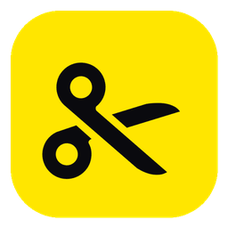

AUTOCORTECole o link de uma live e receba cortes prontos para TikTok, Reels e Shorts: cortados, legendados, com gancho e áudio ajustado. Enquanto os outros clipadores ainda estão baixando a live, você já postou.
Da live no YouTube, Twitch ou Kick, ao vivo ou já gravada.
Fundo desfocado, tela cheia ou webcam em cima e jogo embaixo.
Os cortes vão aparecendo prontos. Troque o gancho se quiser e baixe.
Transcreve cada palavra com o tempo exato.
Reações, gritos, risadas, "não acredito!".
Pronto para TikTok, Reels e Shorts.
Palavra por palavra, com destaque amarelo.
Nos primeiros segundos, e você pode editar.
Volume no padrão das redes sociais.
A cada 5, 10 ou 15 min já saem cortes.
Veja os picos da live num gráfico.
15 minutos de uma live de GTA 6 viraram 6 cortes prontos, legendados e com gancho, sem nenhuma edição manual.
Teste feito em um PC comum, sem placa de vídeo.Com a live ainda acontecendo, o primeiro bloco de 5 minutos já virou 2 cortes prontos para postar.
O tempo varia conforme o computador e a internet.🛡️ Garantia de 7 dias: se não gostar, peça seu dinheiro de volta.
Não. Só em computador com Windows 10 ou 11 de 64 bits.
Não. Você só cola o link e escolhe o formato. O programa corta, legenda e ajusta o áudio sozinho.
Não. Com a live ao vivo, ele grava em blocos e já entrega cortes a cada bloco.
YouTube, Twitch e Kick, ao vivo ou vídeos já gravados.
Não. Pagamento único.
Pode. Em cada corte você troca o texto e clica em "Aplicar gancho": o corte é refeito na hora.
Não. Funciona só com o processador. Em PC mais fraco, os cortes demoram um pouco mais.
Logo após a compra, você recebe por e-mail o link para baixar o instalador e o guia de instalação.